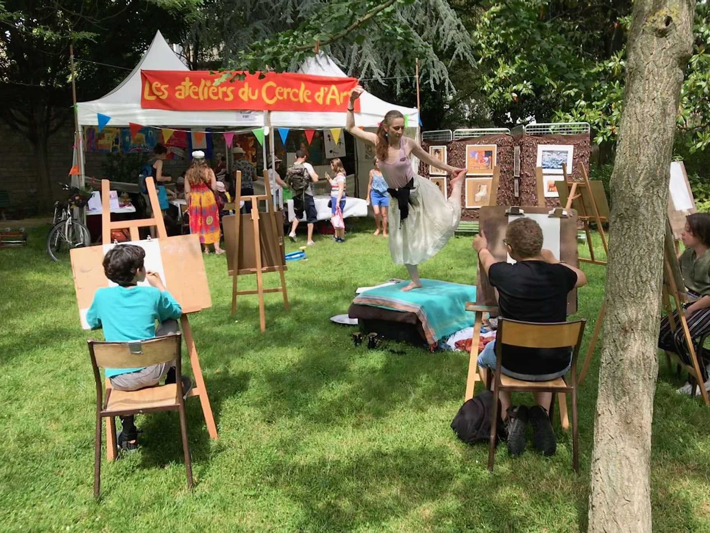
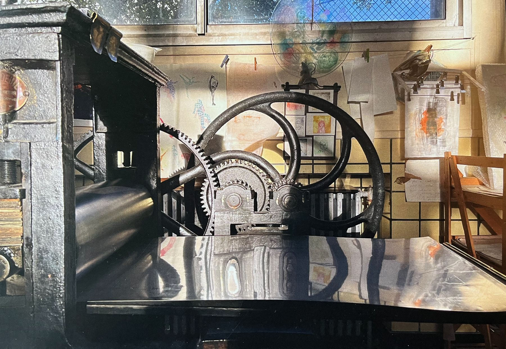

Chargement du prochain rendez-vous…
Le cercle
Un cercle ouvert, au cœur d'une ville d'artistes
Depuis 1966, l'association fait découvrir les œuvres, favorise les rencontres et guide jeunes et adultes vers la pratique des arts plastiques. Elle a initié Zig-Zag, les portes ouvertes des ateliers d'artistes de Gentilly, et signe chaque année la fresque de la grande scène de la fête de la ville.

Explorer
Entrez dans l'atelier

La galerie
Fresques, calendrier des J.O., expositions, carnets de croquis : les œuvres en plein écran, créditées.
Voir les œuvres →
Ateliers & activités
Peinture-dessin, modelage-sculpture, gravure, modèle vivant, carnets de croquis. Jours, horaires, tarifs.
Découvrir →Artistes
Ceux qui font vivre le cercle.
Rencontrer →
Expositions & événements
Vernissages, salons, archives.
Agenda →
Le cercle
Histoire, valeurs, bureau.
En savoir plus →En chiffres
Actualités
Dernières nouvelles
Rejoindre le cercle
Venez créer avec nous
Le Cercle d'art est un cercle ouvert : enfants dès 4 ans, ados, adultes, débutants ou initiés. Adhésion 23 € par an.